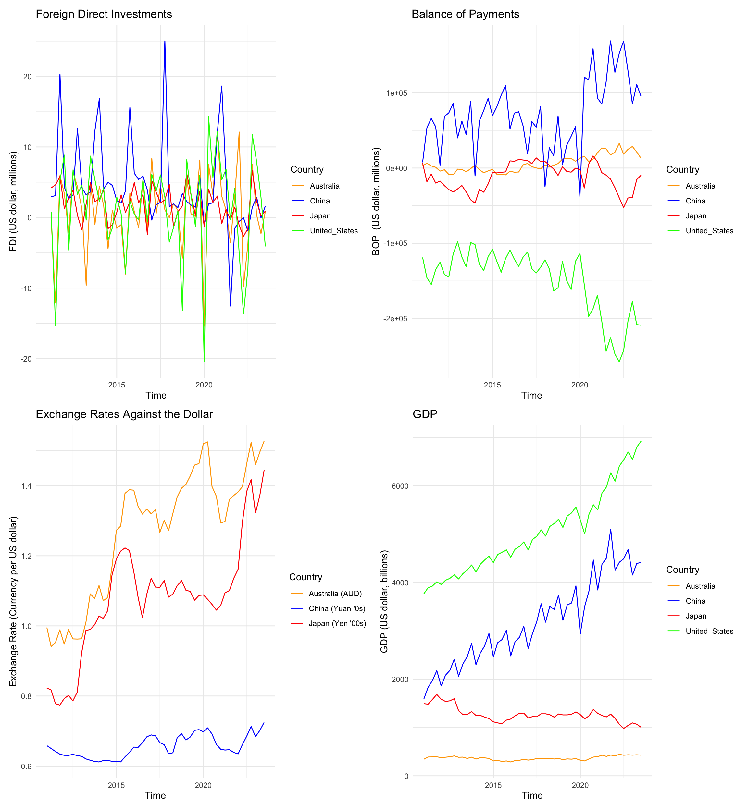
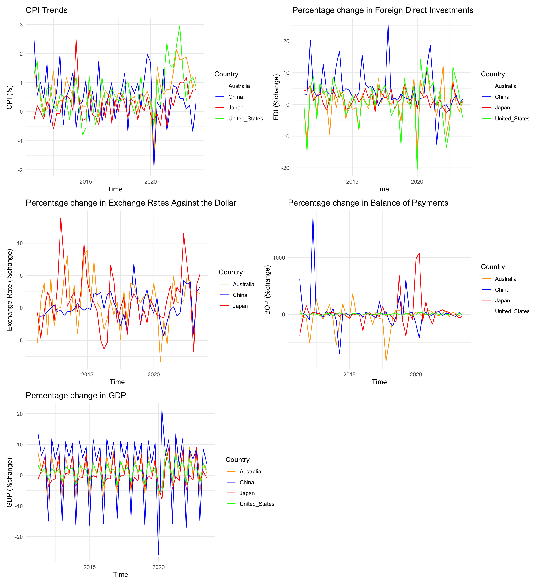
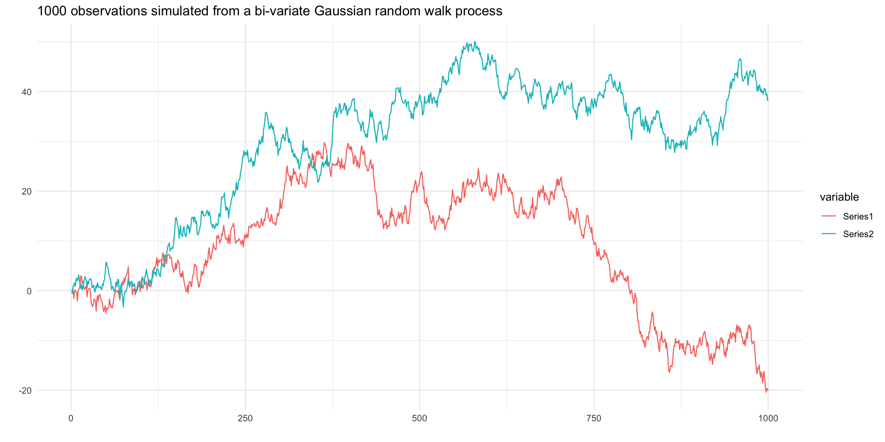

Global Echoes: Analyzing the Interplay of Economic Indicators Across Leading Economies
1. The Question Objective, and Motivation
Objective: Construct a Bayesian Vector Autoregression model to forecast major macroeconomic indicators for the United States, Australia, Japan, and China to facilitate an investigation into the prospective interdependencies between the economies of these nations.
Question: This research project will examine how trade relationships, investment flows, monetary policy environments, and economic performances within the United States, Australia, Japan and China mutually influence each other, and assess the implications of these interactions for predicting future values of these economic indicators.
Motivation: Since the onset of the COVID-19 pandemic, the global economic landscape has witnessed a series of unprecedented shifts in key macroeconomic indicators, spurred by governments’ adoption of varied expansionary monetary policies. Initially, to buffer their economies, many nations implemented expansive monetary strategies, later swiftly transitioning to interest rate hikes in a bid to manage surging inflation rates—a scenario not seen in decades. The pandemic’s disruption to trade further exacerbated inflationary pressures for some economies, highlighting the intricate interdependencies among major economies with significant trade and financial ties. This period recorded stark contrast in inflation levels, with unprecedented highs in the US and Australia and notably low inflation in China and Japan. Amidst this turmoil, a divergence in economic paths also became apparent, the United States and Australia have witness robust economic rebounds, whereas China and Japan saw more tepid recoveries. This research aims to dissect the nuanced web of economic interdependencies between the United States, Australia, Japan, and China, analyzing how their trade relationships, investment flows, and monetary policy environments have mutually influenced their economic performances. Additionally, it seeks to understand the ramifications of these dynamics for the predictive accuracy of future economic indicators, offering insights into the evolving global economic order.
2. Data and their properties
Proposed Dataset: This research project will utilize data from the International Monetary Fund’s (IMF) extensive database, which offers a comprehensive collection of global economic information. The IMF’s collection includes several key databases such as the World Economic Outlook Databases, International Financial Statistics (IFS), Government Finance Statistics. The analysis will predominantly focus on the IFS database, which encompasses an sizeable collection of financial and economic data from across the global, featuring 1,681 distinct indicators such as consumer price index, interest rates, exchange rates, national accounts, government finance statistics. The data is available in various frequencies – annual, semi-annual, quarterly, monthly, daily, and weekly. As this research is primarily focused on analyzing macroeconomic data that are published on a monthly or quarterly basis, quarterly data from Q1 2011 to Q3 2023 will be used. The analysis will examine key macroeconomic variables including consumer price indexes, foreign direct investments, exchange rates, balance of payments, and the national gross domestic product of the United States, Australia, Japan, and China.
Variables and Motivation:
| Variables | Original Unit | Final Unit | Mnemonic | Code |
|---|---|---|---|---|
| Prices, Consumer Price Index, All items, Previous period | % Change | % Change | CPI | PCPI_PC_PP_PT |
| International Investment Positions, assets, Direct Investment | US dollar, millions | % Change | FDI | IAD_BP6_USD |
| Exchange Rates, Domestic Currency per U.S. Dollar, Period Average | US dollar, millions | % Change | XCH | ENDA_XDC_USD_R |
| Balance of Payments, Current Account, Goods and Services, Net | US dollar, millions | % Change | BOP | BGS_BP6_USD |
| Gross Domestic Product, Nominal, Unadjusted, Domestic Currency | Domestic Currency | % Change | GDP | NGDP_NSA_XDC |
The variables included in this study were chosen with the objective to include key economic indicators that are susceptible to changes in other nations while also having experienced significant fluctuations over the past decade. These variables were chosen not only for their ability to provide insights into the trade relations, investment dynamics and monetary policy frameworks, but also for their roles as barometers of overall economic health and performance. Foreign direct investment (FDI) is a direct indicator of cross- border investment flows and serves as a proxy for economic confidence and integration between nations. Exchange rates directly impact trade balances and investment flows, influencing economic performances. By examining the volatility and trends in exchange rates, insights can be gleaned into how monetary policies and economic conditions in one country can affect its trade partners. Balance of payments is a comprehensive measure that captures the transactions between a country and the rest of the world, offering a holistic view of its economic interactions. For example, some view changes in balance of payments as largely a result of imports and exports, which can cause one country to import the inflation of another country and vice versa. GDP growth is the ultimate measure of economic performance, encapsulating the outcome of various economic activities and policies. Analyzing GDP in the form of percentage change allows for assessing economic momentum and comparing growth rates across countries and over time, offering a clear picture of economic health and trends. Foreign direct investment, exchange rates, balance of payments and gross domestic products were transformed into percentage change from the previous period, aiming to standardize the data, facilitate temporal comparisons and enhancing the interpretability of trends over time. The presence of cyclical trends in the variables, alongside the observed impact of lagged values on future outcomes, highlights the suitability of the Bayesian Vector Autoregression model for our analysis. This model can well capture the temporal dynamics and interdependencies inherent in these economic indicators, offering a robust framework for understanding the nuanced interactions and feedback loops that characterize their behavior over time.
Data Plots
Original Variables
Transformed Variables

Stationarity Check
Stationary Tests
The Augmented Dickey-Fuller Test is used in this section to test the null hypothesis that a unit root is present in the time series and the time series is non-stationary.
| Dickey-Fuller Statistic | Lag Order | P-value | Country |
|---|---|---|---|
| -3.537365 | 4 | 0.04688628 | China |
| -2.099504 | 4 | 0.5343704 | Japan |
| -2.466873 | 4 | 0.3866844 | United_States |
| -1.548745 | 4 | 0.7557808 | Australia |
The lag order chosen in the ADF test is 4, which is appropriate given our data is of quarterly frequency. The result of the ADF test on the CPI data shows that we do not have enough evidence to reject the null hypothesis that the CPI series is unit root non-stationary at 1% significance level.
| Dickey-Fuller Statistic | Lag Order | P-value | Country |
|---|---|---|---|
| -4.381655 | 4 | 0.01 | China |
| -3.753413 | 4 | 0.02935319 | Japan |
| -3.629899 | 4 | 0.03957787 | United_States |
| -3.251905 | 4 | 0.08919385 | Australia |
The ADF results shows that we have enough evidence to reject the null hypothesis that the foreign direct investment (% change) data is not unit-root stationary for Australia, the United States and Japan at 1% significance level and we do have enough evidence to reject the null hypothesis for China at 1% significance level.
| Dickey-Fuller Statistic | Lag Order | P-value | Country |
|---|---|---|---|
| -3.062323 | 4 | 0.1481656 | China |
| -3.278626 | 4 | 0.08503945 | Japan |
| -2.92166 | 4 | 0.2045889 | Australia |
The result of the ADF test on the exchange rate data shows that we do not have enough evidence to reject the null hypothesis that the exchange rate (%change) against the dollar series is unit root non-stationary at 1% significance level.
| Dickey-Fuller Statistic | Lag Order | P-value | Country |
|---|---|---|---|
| -5.055137 | 4 | 0.01 | China |
| -2.491177 | 4 | 0.3772656 | Japan |
| -2.256564 | 4 | 0.4713741 | United_States |
| -3.495297 | 4 | 0.05135306 | Australia |
The result of the ADF test on the balance of payments data shows that we do not have enough evidence to reject the null hypothesis that the balance of payments (%change) series is unit root non-stationary at 5% significance level for all countries except for China.
| Dickey-Fuller Statistic | Lag Order | P-value | Country |
|---|---|---|---|
| -2.699632 | 4 | 0.2936494 | China |
| -2.528094 | 4 | 0.3624574 | Japan |
| -2.894114 | 4 | 0.2156383 | United_States |
| -3.114811 | 4 | 0.1271114 | Australia |
The result of the ADF test on the GDP data shows that we do not have enough evidence to reject the null hypothesis that the GDP (%change) series is unit root non-stationary at 5% significance level.
The results from the ADF tests indicates that further transformations are needed to achieve stationarity for most of the variables included in this research.
3. The Model and Hypothesis
We will employ four models to address our proposed problem. Firstly, we will use a standard Bayesian Vector Autoregressive (BVAR) model with independently and indentically distributed innovations, as outlined in details in Woźniak (2022). Additionally, we will investigate a large BVAR model with flexible error covariance structures, following the methodology proposed by Chan (2015). Specifically, the second model will incorporate MA(1) Gaussian innovations to better account for potential model misspecifications such as omitted variable bias and to facilitate shrinkage in VAR coefficients. Our third model will be a BVAR incorporating t-distributed innovations to better handle outliers than the Gaussian approach, which will be useful to handle extreme events like the Covid-19 Global Pandemic and economic slow down. The final model will combined a common stochastic volatility frame work with t-distributed innovations, offering a robust approach to volatility modelling.
3.1 Model 1: Standard BVAR(p) Model
3.1.1 Model Specification
\[ Y = XA+E\] \[E|X \sim \mathcal{MN}_{T \times N}(0_{T \times N},\Sigma_{N \times N}, I_T)\] \[ A = \begin{bmatrix} \mu_0^T \\ A_1^T \\ \vdots \\ A_p^T \end{bmatrix} , \quad Y = \begin{bmatrix} y_1^T \\ y_2^T \\ \vdots \\ y_T^T \end{bmatrix} , \quad x_t = \begin{bmatrix} 1 \\ y_{t-1}^T \\ \vdots \\ y_{t-p}^T \end{bmatrix} , \quad X = \begin{bmatrix} x_1^T \\ x_2^T \\ \vdots \\ x_T^T \end{bmatrix} , \quad E = \begin{bmatrix} e_1^T \\ e_2^T \\ \vdots \\ e_T^T \end{bmatrix} \]
where
- \(T\) is the number of time periods under consideration
- \(N\) is the number of variables, in our case, N = 20
- \(P\) is the number of lags
- \(Y\) is a \(T \times N\) matrix of variables of response variables we aim to model.
- \(A\) is a \(K \times N\) matrix of coefficients, \(K = (1+𝑝\times N)\).
- \(E\) is a \(T \times N\) matrix of the error terms
- \(X\) is a \(T \times (1+𝑝\times N)\) matrix of covariates
- \(\Sigma\) is a \(N \times N\) matrix representing the row-specific covariance matrix
- \(I_T\) is a \(T \times T\) identity matrix representing the column specific covariance matrix
- \(E|X\) follows a matrix-variate normal distribution with mean \(0_{T \times N}\), row specific covariance matrix \(\Sigma_{N \times N}\) and column specific covariance matrix \(I_T\)
The Bayesian Vector Autoregression model as formulated above provides a robust framework for investigating the relationships among selected economic indicators across different nations. By employing this model, this research aims to quantitatively measure the influence of one country’s economic indicators on another, such as how lagged changes in China’s inflation rate, may influence the GDP growth rate of the United States and vice versa. The BVAR model, with its estimation of coefficients across various lags, offers a deep understanding of both immediate and more delayed economic interactions, which is crucial to analyzing the cyclical nature of trade relationships, investment flows, monetary policy environments, and economic performances and the transmission of these metrics across borders.
The strength of this BVAR model lies in its ability to incorporate prior economic knowledge and beliefs into the estimation process. By setting prior distributions for the matrix of coefficients A and the covariance matrix \(\Sigma\), the model can be tailors to reflect established economic theories regarding international economic linkages and the time it takes for policy changes in one country to affect another. By calibrating the prior variances, particularly for the autoregressive coefficients, we can integrate prior knowledge or hypotheses, such as the presence of unit roots or the diminishing influence of distant lags on current values, into the analysis. When interpreting the estimation output, attention will be given to the posterior means and variances of the coefficients, which represent the model’s “learnt” understanding of the underlying economic structure. The analysis will be supplemented by forecast error variance decompositions to better understand the proportion of the movements in economic indicators that can be accounted for by their own shocks versus shocks to other variables.
The economic context underscoring this analysis is the increased globalization over the past decade, marking an era where economies are more intertwined than ever through trade, capital flows, and policy decisions. This period has witnessed not only the strengthening of global economic ties but also recent calls from political leaders advocating for a reduction in globalization. These contrasting dynamics highlight the complexity of the current global economic landscape, where the push for deeper integration coexists with growing sentiments for retrenchment. This dual trend sets the stage for our investigation, providing a rich context to explore how economic variables across nations influence each other amidst fluctuating levels of global interconnectedness. In this environment, understanding the cross-country spillover effects is vital for policymakers and businesses alike, as decisions made in one country can have far-reaching implications. By addressing these aspects, this research will contribute to the discourse on economic policy formulation, risk assessment, and strategic planning.
3.1.2 Prior Settings
We will employ a Normal-Inverse Wshart distribution for the joint distribution of coefficient matrices A and the row-specific variance matrix \(\Sigma\). Specifically, we have:
\[\Sigma \sim \mathcal{IW}(S_0, \nu_0) \]
\[p(\Sigma) \propto |\Sigma|^{-\frac{\nu_0+N+1}{2}}exp(-\frac{1}{2}tr(\Sigma^{-1}S_0))\]
\[A|\Sigma \sim \mathcal{MN}_{K \times N}(A_0, \Sigma, V_A)\]
\[p(A|\Sigma) \propto |\Sigma|^{-\frac{K}{2}}exp(-\frac{1}{2}tr(\Sigma^{-1}(A-A_0)^T(A-A_0)))\]
\[(A,\Sigma) \sim \mathcal{NIW}_{K \times N} (A_0, V_A, S_0, \nu_0)\]
\[p(A,\Sigma) \propto |\Sigma|^{-\frac{K+\nu_0+N+1}{2}} \times exp(-\frac{1}{2}tr(\Sigma^{-1}S_0))\times exp(-\frac{1}{2}tr(\Sigma^{-1}(A-A_0)^T(A-A_0)))\]
where
\[V_A = diag(v_{A,ii})\]
\[v_{A,ii} = \begin{cases} \kappa_l(\frac{l^2}{\hat{s}_r}) & \text{for a coefficient associated to lag l of variable r} \\ \kappa_2& \text{for an intercept} \end{cases}\]
where \(\hat{s}_r\) is the sample variance of an AR(4) model for the variable r.
Additionally, we adopt commonly used values for the hyperparameters as established in the literature.
\[A_0 = 0\]
\[v_0 = N+3\]
\[S_0 = I_N\]
\[\kappa_1 = 0.2^2 \quad \kappa_2 = 10^2\]
The hyperparameters \(\kappa_1\) and \(\kappa_2\) are specified in a way such that the coefficient associated with a lag l variable is shrunk more heavily to - as lag length increases whereas the intercepts are not shrunk to 0.
3.1.3 Posterior Distributions
The posterior distribution specified above has the form
\[p(Y|A, \Sigma) = (2\pi)^{-\frac{Tn}{2}}|\Sigma|^{-\frac{T}{2}}exp(-\frac{1}{2}tr(\Sigma^{-1}(Y-XA)^T(Y-XA))\]
and the joint posterior distribution
\[p(A, \Sigma \mid Y) = \frac{p(A,\Sigma,Y)}{p(Y)}\propto p(A, \Sigma, Y) \propto p(Y|A,\Sigma)\times p(A,\Sigma) = p(Y|A,\Sigma) p(A \mid \Sigma) p(\Sigma)\]
\[\propto |\Sigma|^{-\frac{T}{2}}exp(-\frac{1}{2}tr(\Sigma^{-1}(Y-XA)^T(Y-XA))) \times\]
\[\mid \Sigma \mid^{-\frac{\nu_0+N+K}{2}}exp(-\frac{1}{2}tr(\Sigma^{-1}S_o))exp(-\frac{1}{2}tr(\Sigma^{-1}(A-A_0)^TV_A^{-1}(A-A_0))\]
\[\propto |\Sigma|^{-\frac{T+N+K+\nu_0+1}{2}} \times \exp (-\frac{1}{2}tr(\Sigma^{-1}S_0)) \times \]
\[exp(-\frac{1}{2}tr(\Sigma^{-1}(A_0^TV_a^{-1}A_0+Y^TY-\bar{A}^T\bar{V}^{-1}\bar{A})\times\] \[exp(-\frac{1}{2}tr(\Sigma^{-1}(A-\bar{A})^T\bar{V}^{-1}(A-\bar{A})))\] Hence,
\[p(A, \Sigma \mid Y, X) = p(A \mid Y, X, \Sigma) p(\Sigma \mid Y, X)\]
\[p(A \mid Y, X, \Sigma) = \mathcal{MN}_{k \times N}(\bar{A}, \Sigma, \bar{V})\]
\[p(\Sigma \mid Y, X) = \mathcal{IW}_N(\bar{S}, \bar{\nu})\]
where
\[\bar{V} = (X^TX + V_A^{-1})^{-1}\]
\[\bar{A} = \bar{V}(X^TY + V_A^{-1}A_0)\]
\[\bar{\nu} = T + \nu_0\]
\[\bar{S} = S_0 + Y^TY + A_0^TV_A^{-1}A_0 - \bar{A}^T\bar{V}^{-1}\bar{A}\]
3.1.4 Estimation Procedure
In this setting, we have
- \((A,\Sigma) \sim \mathcal{NIW}_{K \times N} (A_0, V_A, S_0, \nu_0)\)
then, prior draws can be sampled from
- \(\Sigma \sim \mathcal{IW}(S_0, \nu_0)\)
- \(A|\Sigma \sim \mathcal{MN}_{K \times N}(A_0, \Sigma, V_A)\)
we use the following Gibb’s Sampler algorithm to sample from the posterior distribution:
- Initialize \(\Sigma\) at \(\Sigma^0\)
- For \(s = 1,...,S_1+S_2\)
- Draw a sample \(A^{(s)}\) from \(p(A \mid Y, X, \Sigma^{(s-1)}) \sim \mathcal{MN}_{k \times N}(\bar{A}, \Sigma, \bar{V})\)
- Draw a sample \(\Sigma^{(s)}\) from \(p(\Sigma \mid Y, X, A^{(s)}) = \mathcal{IW}_N(\bar{S}, \bar{\nu})\)
We discard the first \(S_1\) sample draws to allow the algorithm to converge to the stationary posterior distributiion to obtain \(S_2\) sampled draws from the joint posterior distribution.
\[\left\{A^{(s)}, \Sigma^{(s)}\right\}_{s=S_1+1}^{S_1+S_2}\]
The draws from joint predictive density can then be obtained using the following algorithm:
- Sample S draws \(\left\{ A^{(s)}, \Sigma^{(s)} \right\}_{s=1}^{S}\) from \(p(A,\Sigma|Y, X)\)
- Sample S draws \(\left\{ Y_{t+h}^{(s)} \right\}_{s=1}^S\) from \(Y_{t+h}^{(s)} \sim \mathcal{N}_{hN}(Y_{t+h|t}(A^{(s)}), \mathbb{V}ar[Y_{t+h|t}]|A^{(s)}, \Sigma^{(s)}]\)
3.2 Model 2: Large BVARs model with MA(1) Gaussian innovations
3.2.1 Model Specification
Incorporating MA(1) Gaussian innovations in a large BVARs model lead to a significant enhancement over traditional BVAR models, especially when forecasting macroeconomic variables for several reasons. Firstly, the variances of economic shocks is rarely constant over time. For example, volatility tends to cluster during periods of economic crisis and is more tranquil during stable times. Incorporating stochastic volatility allows the model to adapt to changing volatility in the data, improving forecasting performance especially in the presence of financial market instability or economic policy shifts. In addition, by allowing for serial correlation in the innovations term, we will be able to capture the momentum or persistence in economic variables that is often observed in real-world data. Recognizing that shocks may have a lasting impact over several periods can enhance the model’s ability to predict future values by considering the path-dependent nature of the economy. Our BVAR model with common stochastic volatility is a natural extension to the standard BVAR model and formulated as below:
\[ Y = XA+E\]
where
\[ A = \begin{bmatrix} \mu_0^T \\ A_1^T \\ \vdots \\ A_p^T \end{bmatrix} , \quad Y = \begin{bmatrix} y_1^T \\ y_2^T \\ \vdots \\ y_T^T \end{bmatrix} , \quad x_t = \begin{bmatrix} 1 \\ y_{t-1}^T \\ \vdots \\ y_{t-p}^T \end{bmatrix} , \quad X = \begin{bmatrix} x_1^T \\ x_2^T \\ \vdots \\ x_T^T \end{bmatrix} , \quad E = \begin{bmatrix} e_1^T \\ e_2^T \\ \vdots \\ e_T^T \end{bmatrix} \] where
- \(T\) is the number of time periods under consideration
- \(N\) is the number of variables, in our case, N = 20
- \(P\) is the number of lags
- \(Y\) is a \(T \times N\) matrix of variables of response variables we aim to model.
- \(A\) is a \(K \times N\) matrix of coefficients, \(K = (1+𝑝\times N)\)
- \(E\) is a \(T \times N\) matrix of the error terms
- \(X\) is a \(T \times (1+𝑝\times N)\) matrix of covariates
- \(\Sigma\) is a \(N \times N\) matrix representing the row-specific covariance matrix
the same as before. But, instead of the column specific matrix as the identity matrix, we specify the column specific matrix as a diagonal matrix \(\Omega\). Specifically, we have:
\[E|X \sim \mathcal{MN}_{T \times N}(0_{T \times N},\Sigma_{N \times N}, \Omega_{T \times T})\]
and,
\[\epsilon_t = u_t + \psi_1 u_{t-1}\]
\[u_t \sim \mathcal{N}(0,e^{h_t} \Sigma)\]
\[h_t = \rho h_{t-1} + u_t^h \quad \text{ follows an Autoregressive process of lag 1 AR(1), and}\]
\[u_t^h \sim N(0,\sigma_h^2)\]
\[\Omega = \left( \begin{array}{cccc} (1 + \psi_1^2) e^{h_1} & \psi_1 e^{h_1} & \cdots & 0 \\ \psi_1 e^{h_1} & \psi_1^2 e^{h_1} + e^{h_2} & \cdots & \vdots \\ 0 & \cdots & \ddots & \vdots \\ \vdots & \cdots & \psi_1^2 e^{h_{T-2}} + e^{h_{T-1}} & \psi_1 e^{h_{T-1}} \\ 0 & \cdots & \psi_1 e^{h_{T-1}} & \psi_1^2 e^{h_{T-1}} + e^{h_T} \end{array} \right)\]
In this specification, each element of \(e_t\) may have distinct variances, and the variances of all innovations can be scaled by a common factor. This approach is economically intuitive, as the volatility of macroeconomic variables often exhibit co-movement. It is important to emphasize that each component of \(e_t\) must adhere to the same univariate time series model.
3.2.2 Prior Specification
Here, we consider a priori independent distributions for \((A, \Sigma, \Omega)\), namely:
\[p(A, \Sigma, \Omega) = p(A, \Sigma) \times p(\Omega)\] Given this structure, we can sample from the posterior distribution by sequentially sampling from:
- \(P(A, \Sigma | Y, X, \Omega)\)
- \(P(\Omega | Y, X, A, \Sigma)\)
The prior distribution of \((A,\Sigma)\) follow the same normal inverse Wishart prior distribution as outlined in model one.
For the moving average coefficients, we adopt an uninformative truncated normal prior for the MA coefficient \(\psi\):
\[ \psi \sim \mathcal{N}(\psi_0, V_\psi) \mathbb{1}(|\psi|<1) \]
and we set \(\psi_0 = 0\) and \(V_\psi = 1\) so that the prior centers around 0 with a relatively large variance and has support within (-1,1). Further more, we assume independent priors for \(\sigma^2_h\) and \(\rho\):
\[\sigma_h^2 \sim \mathcal{IG}(\nu_{h_0}, s_{h_0})\]
\[\rho \sim \mathcal{N}(\rho_0, V_\rho) \mathbb{1}(|\rho|<1)\]
We set the hyperparameters \(\nu_{h_0} = 5\), \(s_{h_0} = 0.04\), \(\rho_0 = 0.9\) and \(V_\rho = 0.04\) so that the prior mean of \(\sigma_h^2\) is 0.01 and \(\rho\) is centered at 0.9.
3.2.3 Posterior Distribution
The posterior distribution specified above has the form
\[p(Y|A, \Sigma) = (2\pi)^{-\frac{Tn}{2}}|\Sigma|^{-\frac{T}{2}}|\Omega|^{-\frac{N}{2}}exp(-\frac{1}{2}tr(\Sigma^{-1}(Y-XA)^T\Omega^{-1}(Y-XA))\]
and the joint posterior distribution
\[p(A, \Sigma \mid Y, \Omega) = \frac{p(A,\Sigma,Y, \Omega)}{p(Y, \Omega)}\] \[\propto p(A, \Sigma, Y, \Omega) \propto p(Y \mid A,\Sigma, \Omega)\times p(A,\Sigma, \Omega)\] \[= p(Y \mid A,\Sigma, \Omega) p(A, \Sigma) p(\Omega) = p(Y \mid A,\Sigma, \Omega) p(A \mid \Sigma) p(\Sigma) p(\Omega)\]
\[\propto p(Y \mid A,\Sigma, \Omega) p(A \mid \Sigma) p(\Sigma)\]
\[\propto |\Sigma|^{-\frac{T}{2}}exp(-\frac{1}{2}tr(\Sigma^{-1}(Y-XA)^T\Omega^{-1}(Y-XA)) \times\]
\[\mid \Sigma \mid^{-\frac{\nu_0+N+K}{2}}exp(-\frac{1}{2}tr(\Sigma^{-1}S_o))exp(-\frac{1}{2}tr(\Sigma^{-1}(A-A_0)^TV_A^{-1}(A-A_0))\]
\[\propto |\Sigma|^{-\frac{T+N+K+\nu_0+1}{2}} \times \exp (-\frac{1}{2}tr(\Sigma^{-1}S_0)) \times \] \[exp(-\frac{1}{2}tr(\Sigma^{-1}(A_0^TV_a^{-1}A_0+Y^T\Omega^{-1}Y-\bar{A}^T\bar{V}^{-1}\bar{A})\times\] \[exp(-\frac{1}{2}tr(\Sigma^{-1}(A-\bar{A})^T\bar{V}^{-1}(A-\bar{A})))\]
Hence,
\[p(A, \Sigma \mid Y, X) = p(A \mid Y, X, \Sigma) p(\Sigma \mid Y, X)\]
\[p(A \mid Y, X, \Sigma, \Omega) = \mathcal{MN}_{k \times N}(\bar{A}, \Sigma, \bar{V})\]
\[p(\Sigma \mid Y, X) = \mathcal{IW}_N(\bar{S}, \bar{\nu})\]
where
\[\bar{V} = (X^T\Omega^{-1}X + V_A^{-1})^{-1}\]
\[\bar{A} = \bar{V}(X^T\Omega^{-1}Y + V_A^{-1}A_0)\]
\[\bar{\nu} = T + \nu_0\]
\[\bar{S} = S_0 + Y^T\Omega^{-1}Y + A_0^TV_A^{-1}A_0 - \bar{A}^T\bar{V}^{-1}\bar{A}\]
3.2.4 Estimation Procedure
In this setting, we have
- \((A,\Sigma) \sim \mathcal{NIW}_{K \times N} (A_0, V_A, S_0, \nu_0)\)
- \(p(A, \Sigma, \Omega) = p(A, \Sigma) \times p(\Omega)\)
then, prior draws can be sampled from
\(\Sigma \sim \mathcal{IW}(S_0, \nu_0)\)
\(A|\Sigma \sim \mathcal{MN}_{K \times N}(A_0, \Sigma, V_A)\)
\(\Omega = \left( \begin{array}{cccc} (1 + \psi_1^2) e^{h_1} & \psi_1 e^{h_1} & \cdots & 0 \\ \psi_1 e^{h_1} & \psi_1^2 e^{h_1} + e^{h_2} & \cdots & \vdots \\ 0 & \cdots & \ddots & \vdots \\ \vdots & \cdots & \psi_1^2 e^{h_{T-2}} + e^{h_{T-1}} & \psi_1 e^{h_{T-1}} \\ 0 & \cdots & \psi_1 e^{h_{T-1}} & \psi_1^2 e^{h_{T-1}} + e^{h_T} \end{array} \right)\)
\(\epsilon_t = u_t + \psi_1 u_{t-1}\)
\(\psi \sim \mathcal{N}(\psi_0, V_\psi) \mathbb{1}(|\psi|<1)\)
\(u_t \sim \mathcal{N}(0,e^{h_t} \Sigma)\)
\(h_t = \rho h_{t-1} + u_t^h\)
\(\rho \sim \mathcal{N}(\rho_0, V_\rho) \mathbb{1}(|\rho|<1)\)
\(u_t^h \sim N(0,\sigma_h^2)\)
\(\sigma_h^2 \sim \mathcal{IG}(\nu_{h_0}, s_{h_0})\)
To sample \(S_1+S_2\) draws of \(\left\{\Omega^{(s)}\right\}_{s=1}^{S_1+S_2}\)
- Sample \(S_1+S_2\) draws of \(\left\{\sigma^{2,(s)}_h\right\}_{s=1}^{S_1+S_2}\) from \(\mathcal{IG}(v_{h_0}, s_{h_0})\)
- Sample \(S_1+S_2\) draws of \(\left\{\rho^{(s)}\right\}_{s=1}^{S_1+S_2}\) from \(\mathcal{N}(\rho_0, V_\rho) \mathbb{1}(|\rho|<1)\)
- For each \(\sigma^{2,(s)}_h\), sample \(\left\{u_t^{h,(s)}\right\}_{t=1}^T\) from \(N(0,\sigma_h^{2,(s)})\)
- For t = 1,…,T and s = 1,…, \(S_1+S_2\), compute \(h_t^{(s)} = \rho h_{t-1}^{(s)} + u_t^{h,(s)}\)
- Sample \(S_1+S_2\) draws of \(\left\{u_t^{(s)}\right\}_{s=1}^{S_1+S_2}\) from \(u_t \sim \mathcal{N}(0,e^{h_t^{(s)}} \Sigma)\) for t = 1,…,T
- Sample \(S_1+S_2\) draws of \(\left\{\psi^{(s)}\right\}_{s=1}^{S_1+S_2}\) from \(\mathcal{N}(\psi_0, V_\psi) \mathbb{1}(|\psi|<1)\)
- for each t = 1,…,T and s = 1,…\(S_1+S_2\), compute \(\epsilon_t^{(s)} = u_t^{(s)} + \psi^{(s)}u_{t-1}^{(s)}\)
After we have obtained \(\left\{\Omega^{(s)}\right\}_{s=1}^{S_1+S_2}\), we can use the following Gibb’s Sampler algorithm to sample from the posterior distribution \(p(A \mid Y, X, \Sigma, \Omega)\):
- Initialize \(\Sigma\) at \(\Sigma^0\)
- For \(s = 1,...,S_1+S_2\)
- Draw a sample \(A^{(s)}\) from \(p(A \mid Y, X, \Omega^{(s)}, \Sigma^{(s-1)}) \sim \mathcal{MN}_{k \times N}(\bar{A}, \Sigma, \bar{V})\)
- Draw a sample \(\Sigma^{(s)}\) from \(p(\Sigma \mid Y, X, A^{(s)}, \Omega^{(s)}) = \mathcal{IW}_N(\bar{S}, \bar{\nu})\)
We discard the first \(S_1\) sample draws to allow the algorithm to converge to the stationary posterior distributiion to obtain \(S_2\) sampled draws from the joint posterior distribution.
\[\left\{A^{(s)}, \Sigma^{(s)}\right\}_{s=S_1+1}^{S_1+S_2}\]
Sampling from the joint predictive density is the same as before.
4. Model Estimation
4.1 Standard Bayesian VAR
4.1.1 Model Building Code and Validation
We verify that our model can replicate the true parameter of the data generate process by: 1. Generate artificial data containing 1000 observations simulated from a bi-variate Gaussian random walk process with the covariance matrix equal to the identity matrix of order 2. That is,
\[\mathbf{y_t} = \begin{pmatrix} y_t,1 \\ y_t,2\end{pmatrix} = \mathbf{y_{t-1}} + \mathbf{\epsilon_t} = \begin{pmatrix}y_{t-1,1}\\y_{t-1, 2}\end{pmatrix} + \begin{pmatrix}\epsilon_{t,1}\\ \epsilon_{t, 2}\end{pmatrix}\] and
\[\mathbf{\epsilon} \sim iid \mathcal{N}(\mathbf{0}, \mathbf{I_2} )\]

Then we estimate a model with a constant term and 1 lag using the simulated data, show that the posterior mean of the autoregressive and the covariance matrices are close to an identity matrix and that the posterior mean of the constant term is close to a vector of zeros.
[1] "Posterior mean of autoregressive parameter:" [,1] [,2]
[1,] 0.002 0.015
[2,] 0.999 0.000
[3,] 0.000 0.999[1] "Posterior standard deviation of autoregressive parameter:" [,1] [,2]
[1,] 0.023 0.023
[2,] 0.001 0.001
[3,] 0.001 0.001[1] "Posterior mean of covariance matrix:" [,1] [,2]
[1,] 0.101 0.000
[2,] 0.000 0.101[1] "Posterior standard deviation of covariance matrix:" [,1] [,2]
[1,] 0.005 0.003
[2,] 0.003 0.0044.2 Large BVARs model with MA(1) Gaussian innovations
4.2.1 Model Building Code and Validation
[1] "Posterior mean of autoregressive parameter:" [,1] [,2]
[1,] 0.003 0.025
[2,] 0.999 0.000
[3,] 0.000 0.999[1] "Posterior standard deviation of autoregressive parameter:" [,1] [,2]
[1,] 0.031 0.031
[2,] 0.001 0.001
[3,] 0.001 0.001[1] "Posterior mean of covariance matrix:" [,1] [,2]
[1,] 0.101 0.000
[2,] 0.000 0.101[1] "Posterior standard deviation of covariance matrix:" [,1] [,2]
[1,] 0.004 0.003
[2,] 0.003 0.005References
Chan, Joshua C. 2015. “Large Bayesian Vars: A Flexible Kronecker Error Covariance Structure.” SSRN Electronic Journal.
Woźniak, Tomasz. 2022. Bsvars: Bayesian Estimation of Structural Vector Autoregressive Models. R Package. https://cran.r-project.org/package=bsvars.